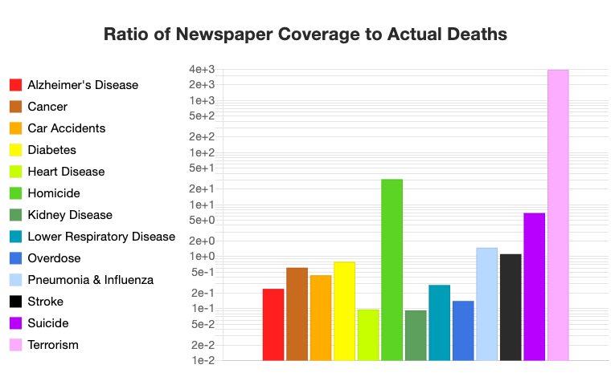

Example Analyses
As inspiration for your final projects, check out these prior exploratory data analyses.
Previous course showcases

Spring 2021 Showcase
Projects from the spring 2021 semester of this class.

Spring 2020 Showcase
Projects from the spring 2020 semester of this class.
Other exploratory analyses
Some of these go into further detail than we will cover in this class, but hopefully they will inspire you as you prepare for your own project:

Survivors of the Titantic
A great overview of getting started with the tidyverse.
Is Usain Bolt really the fastest man on earth?
by Anindya Mozumdar. This analysis uses some statistical modeling (which won’t cover), but the use of visualizations alone are effective for addressing the research questions posed.
F1 racing data analysis
by Jonathan Bouchet. This is an extensive exploratory data analysis of a variety of data on races, drivers, and constructors across the history of Formula 1 racing. This would probably be overkill for a course project, but sections of it (e.g. section 3 on the races, or sections 4 and 5 together on the drivers and constructors) would make a nice project. It involves mutliple data sets, some not-so-simple data cleaning, and a wide variety of nice visualizations.

Increasing Intensity of Strong Atlantic Hurricanes
by James B. Elsner. This is a short analysis with the goal of validating the predictions of this study published in Nature in 2008, which predicted that Atlantic tropical cyclones would continue to get stronger on average over time. While this analysis is too short to be considered adequate for a final project, it is still a good example of good data source documentation and one effective visualization. An expanded inquiry into the questions addressed here would make a good course project.

Death: Reality vs Reported
by Owen Shen. This is an interesting original analysis in which the author collected the data himself. The analysis compares whether the proportion of actual causes of death is consistent with the proportion of death causes that the media reports. This analysis also uses some interactive graphics so that the reader can view different versions of the same plot, such as scrolling through the plot over time.

Are first babies more likely to be late?
by Allen Downey. This is another relatively short analysis, but the author does a good job of documenting his data sources, stating the assumptions he makes, and also describes what data were dropped from the analysis (i.e. babies born via C-section).
Historically significant analyses
Exploratory data analysis has been around for a very long time. Here are some of the most historically famous.

W.E.B. Du Bois’ “The Exhibit of American Negroes”
In 1900, W.E.B. Du Bois presented “The Exhibit of American Negroes” at the Exposition Universelle in Paris. Du Bois described the exhibition as “Thirty-two charts, 500 photographs, and numerous maps and plans form the basis of this exhibit. The charts are in two sets, one illustrating conditions in the entire United States and the other conditions in the typical State of Georgia.” The charts in his exhibition are staggeringly powerful. This six-part series published in Nightingale displays and discusses many of his impressive visualizations. You can also purchase a book on the portraits on Amazon.

Minard’s Napoleon March Map
The “Napoleon March Map” by Charles Joseph Minard is widely viewed as one of the greatest data visualizations of all time. The chart depicts Napoleon’s disastrous campaign to conquer Moscow. Having started with around 470,000 soldiers, he returned with just 10,000. The width of the line represents the total number of soldiers and the color represents the direction (yellow for towards Moscow, black for the return trip).

Tableau’s Top 10 GOAT Data Visualizations
It’s hard to say which data visualizations are the “Greatest Of All Time,” but Tableau put together a pretty excellent collection for their top 10 list.
:::